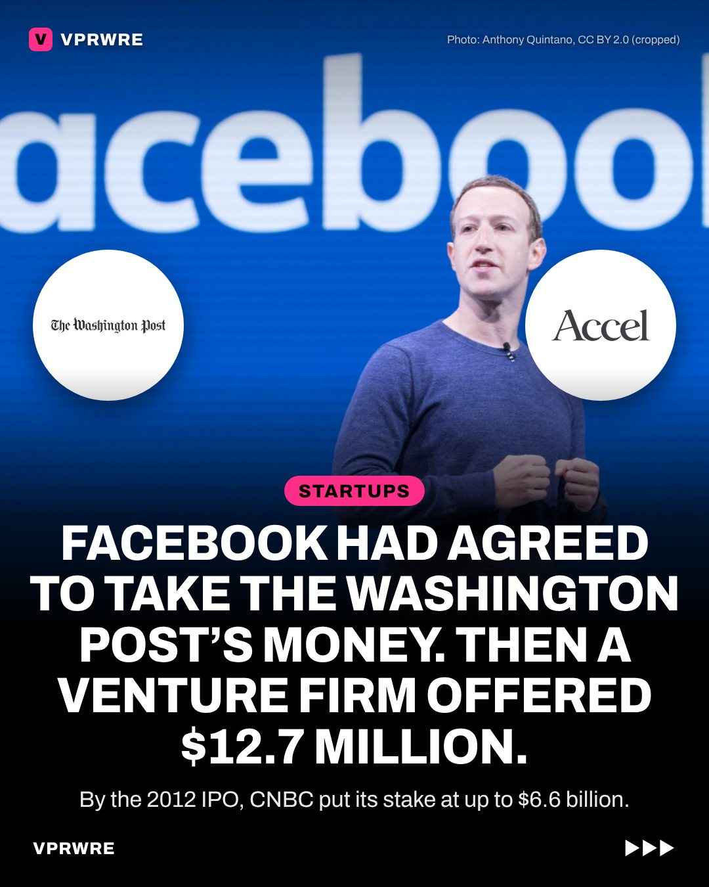

Deals
Facebook had agreed to take The Washington Post’s money. Then a venture firm offered $12.7 million.
The Washington Post almost owned a piece of Facebook.

In 2005, by Mark Zuckerberg’s account, the Post’s Don Graham offered $5 million for 10%, and Zuckerberg agreed. Then Jim Breyer of the venture firm Accel heard about it and went after the deal anyway.
Over dinner, where Zuckerberg was too young to drink and ordered a Sprite, Breyer offered $12.7 million for 13%. Zuckerberg took the dilemma to Graham, who released him from his commitment.
At Facebook’s 2012 IPO, CNBC estimated Accel’s stake was worth as much as $6.6 billion. The Washingtonian estimated a 10% stake would have been worth over $7 billion.
Our take: a deal isn’t done until it closes. Graham let the founder walk, a costly move but a classy one.
Would you have held him to his word?
The carousel
11 slides · Open on Instagram
Disclosure: VPRWRE drafts with Claude, Anthropic’s AI.